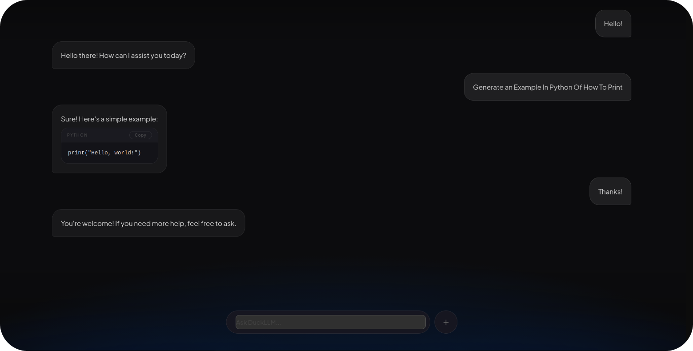
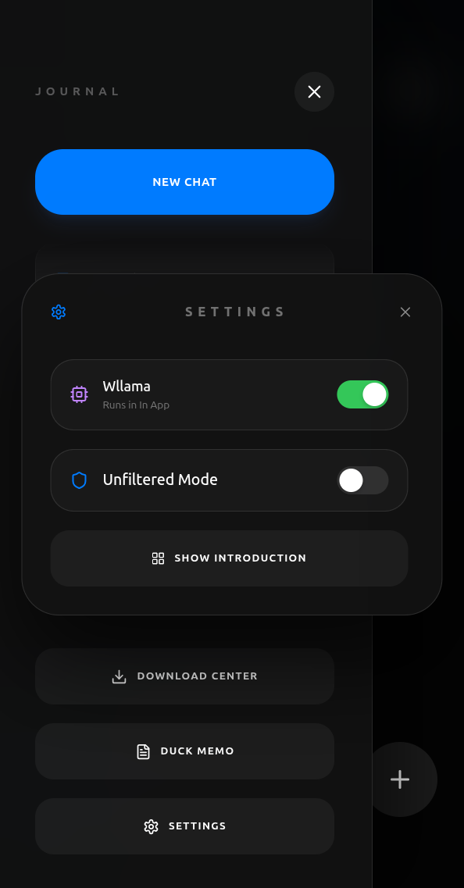
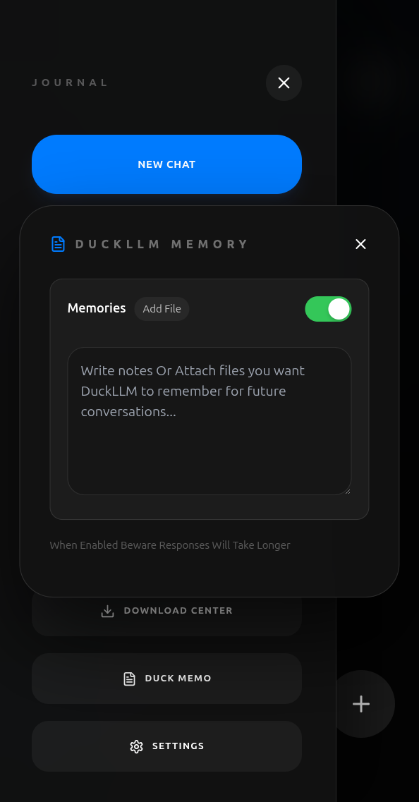
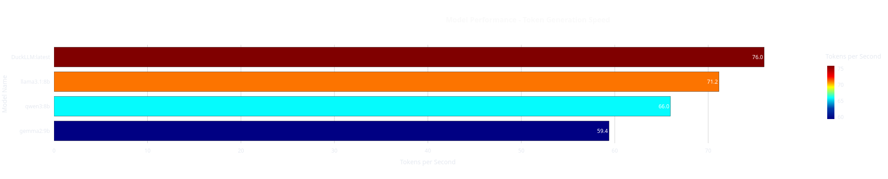
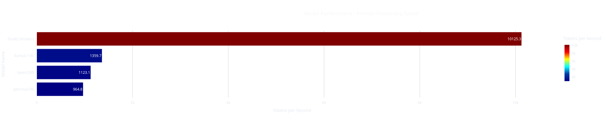
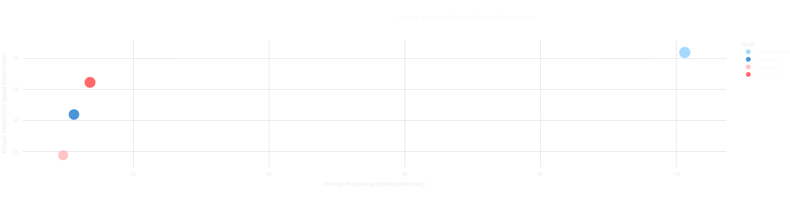

Atlas
Локальная ИИ-Модель Нового Поколения
Абсолютно независимая и глубоко настраиваемая локальная нейросетевая модель, разворачиваемая непосредственно на вашем аппаратном обеспечении. Вы получаете полный контроль над архитектурой и весами: дообучайте систему на собственных базах знаний, коде или документах без единой утечки данных в облако. Управление осуществляется через революционный динамический интерфейс, гармонично встраивающийся в рабочую среду.
Развернуть Atlas локальноМнения инженеров и исследователей
«Ультимативное решение для приватной разработки. Концепция динамического острова переворачивает представление о UX: модель всегда находится на расстоянии одного клика и не перегружает рабочее пространство громоздкими окнами.»
«Возможность тонкой настройки весов на локальных датасетах позволила нам автоматизировать рутинный аудит кода без рисков компрометации интеллектуальной собственности. Скорость инференса на высоте.»
«Первая полноценная локальная LLM, которая из коробки демонстрирует идеальный баланс между энергоэффективностью автономной работы и глубиной контекстуального понимания сложных технических задач.»
Архитектурные преимущества
Удобство
Интуитивный минималистичный интерфейс в виде динамического острова интегрируется поверх любых окон. Он мгновенно адаптируется, сжимается и расширяется при обработке промптов, предоставляя моментальный доступ к контекстным действиям, генерации кода и ответам без переключения фокуса внимания.
Настройка
Полный спектр локального контроля. Интегрированные скрипты дообучения позволяют проводить доводку (Fine-Tuning / LoRA) на ваших собственных файлах, логах или специализированной литературе. Вы сами задаете системные промпты, длину контекста и степень строгости ответов под индивидуальные сценарии.
Efficiency
DuckLLM Offers Efficiency For Better Responses And Better Battery Life. Оптимизированное ядро инференса с применением передовых методов 4-битного и 8-битного квантования обеспечивает минимальную нагрузку на процессор и видеопамять, кратно продлевая автономную работу вашего устройства.
Knowledge
DuckLLM Is Trained On a Vast Majority Of Data And Supports 29+ Languages. Модель обладает колоссальным объемом встроенных структурированных данных, уверенно оперирует сложной технической терминологией, алгоритмами, математической логикой и свободно переключается между языковыми пространствами.
Интерфейс системы

Динамический интерфейс взаимодействия

Панель тонкой конфигурации параметров

Модуль управления базами знаний и контекстом
Анализ производительности и бенчмарки

График распределения скорости генерации токенов (Tokens/Sec)

Сравнительный анализ времени первичной обработки промпта

Корреляция пропускной способности вывода при масштабировании контекста
Собственная инфраструктура без ограничений
Забудьте о жестких рамках коммерческих подписок и внешних партнерских программ. Архитектура Atlas позволяет бесшовно подключать ваши личные API-ключи, разворачивать OpenAI-совместимый локальный сервер и гибко настраивать автоматизированные сценарии использования. Интегрируйте модель в среды разработки (IDE), создавайте независимых автономных агентов для работы с локальной файловой системой и выстраивайте рабочие процессы любой сложности под свои задачи.
Связаться по вопросам внедрения